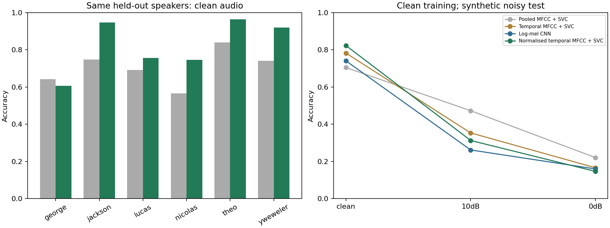
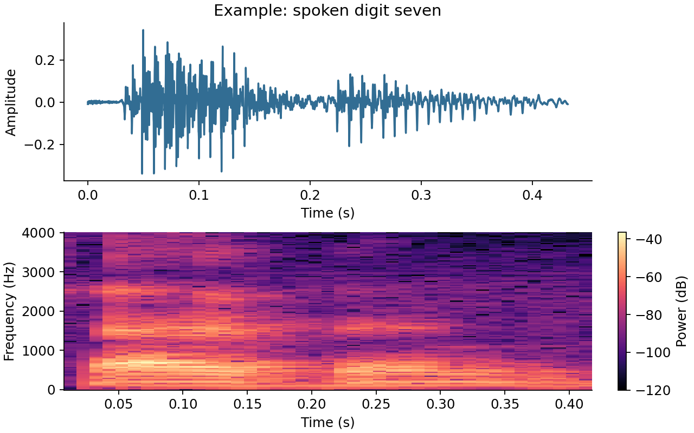
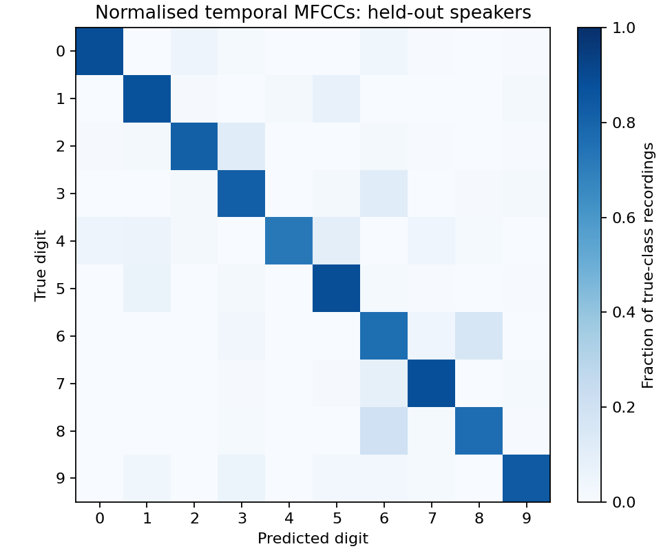

Pooled MFCC + SVC
79 features: means and standard deviations of 13 MFCCs and their first and second differences, plus clip duration. StandardScaler and an RBF SVC with fixed C=10.
A comparison of pooled MFCC features, temporal MFCC classifiers and a small log-mel CNN. Keeping temporal structure improves the clean-audio result, while synthetic noise changes which model performs best.
Clean audio · six held-out-speaker folds · pooled accuracy. The 11.83 percentage-point gain is specific to this development dataset.
Recognising another recording of a familiar voice is different from recognising a person excluded from training. The official FSDD recording split puts all six speakers in both sets; this study also tests one entire speaker at a time.
The task is isolated English digits, zero to nine. The dataset contains 3,000 mono recordings at 8 kHz, with 50 repetitions per digit and speaker.
The normalised temporal SVC performs best on clean recordings of held-out speakers. The pooled MFCC baseline performs best under both tested noise levels.
All models train on clean audio. Test noise is synthetic Gaussian noise at 10 dB and 0 dB SNR. These tests do not establish performance in cafés, conversations or everyday wearable recordings.
| Model | Known speakers | Unseen · clean | Unseen · 10 dB | Unseen · 0 dB |
|---|
The clean result improves for five of the six held-out speakers. George is the exception: accuracy falls from 64.2% to 60.6%. Clean macro F1 increases from 0.7064 to 0.8258.

Each fold trains on five speakers and tests the sixth. Across the folds, every clip receives one prediction from a model trained without its speaker.
Example fold: 2,500 training clips / 500 test clips.
The temporal SVCs select C from 1, 10 and 100 using inner speaker folds. The scaler is fitted inside the training pipeline. One inner training speaker selects the CNN epoch count, followed by refitting on all five outer-training voices.
Method development reused this dataset after earlier results were inspected. The scores are exploratory development evidence, even though the outer test voice is excluded from parameter selection.
In the separate official recording split, indices 0–4 are held out and 5–49 are used for training: 300 test clips and 2,700 training clips, with every speaker in both sets.
79 features: means and standard deviations of 13 MFCCs and their first and second differences, plus clip duration. StandardScaler and an RBF SVC with fixed C=10.
13 coefficients interpolated to 32 ordered time points: 416 features. The representation retains the order of changes within the spoken digit.
26 log-mel bands interpolated to 64 time points. A three-block 2D convolutional network uses a training speaker to choose its epoch count.
The temporal representation is standardised across its 13 coefficients within each frame, using that clip alone. This differs from conventional normalisation along the time axis.
All representations use 25 ms frames with a 10 ms hop. MFCC extraction uses 26 mel filters and coefficients 1–13, omitting coefficient 0.

The confusion matrix pools the 3,000 predictions made with the normalised temporal SVC in the clean speaker test. It contains 2,470 correct predictions.
The notebook includes audio playback and examples of mistakes. Full-precision scores, per-speaker results and tuning choices are saved as JSON; individual predictions are retained in the results directory.
Several changes separate the baseline and the normalised temporal model. Their comparison does not isolate the effect of temporal structure or normalisation. Six speakers also cannot establish how well the method transfers to a wider population.
Independent speakers and noise-aware training would be useful next experiments. No EEG, attention or listening-effort estimation was performed here.

Tested with Python 3.12.4 and PyTorch 2.4.1. Dependency versions are pinned in requirements.txt. Run these commands from the repository root:
python3 -m venv .venv
source .venv/bin/activate
python -m pip install -r requirements.txt
python study.py --download
python compare.py
python normalized.py
python checks.pyThe download is pinned to FSDD v1.0.10, commit d6938f9bf1545aa66d8489fc9f1385a7abd64282. The upstream recordings are downloaded separately. Checks verify speaker separation, prediction coverage, frame normalisation, noise calibration and saved scores.
Code, experiments and explanatory material were prepared with AI assistance. External method ideas are credited; no source code or notebook solution was copied. This is a small reproducible learning study, with no claim of a new algorithm or clinical validation.